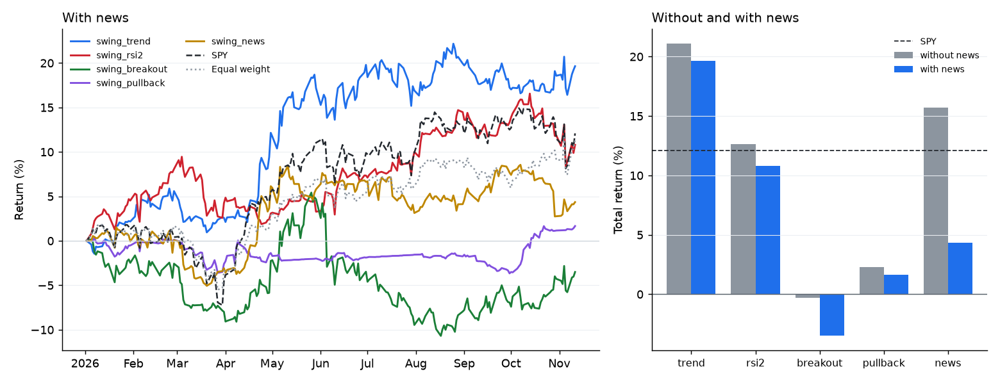

首页 › 指南
用新闻回测交易策略，不用未来函数
新闻策略的回测最容易自欺欺人。只要回测让策略提前读到还没发布的标题，或者读到交易所用的那个收盘之后才出来的报道，结果就会好得不真实，实盘里根本做不到。风险感知交易智能体是一个开源的 Python 项目，它按每条新闻的发布时间回放新闻，并对每次实验做防偷看检查。
新闻回测通常在哪里偷看了未来
大多数新闻回测的「未来函数」都出在几个很平常的地方：
- 只有日期，没有时间。很多数据集只记哪一天，或者只记抓取的时间。下午 4:05 发的财报，就会被当成 4 点收盘时已经知道的消息。
- 时区。把 UTC 时间当成纽约时间，每条新闻都会提前四五个小时。
- 用已经反应过新闻的价格成交。看到标题后按当天收盘价成交，等于假设你比所有人都先读到了它。
- 事后修改和错误日期。文章发布后又被改过，或者日期被错标成了未来。
- 设定里带着后见之明。挑选自己已经知道表现好的股票、日期或规则；LLM 也可能凭记忆这样做。
偷看能多赚多少：同一条标题规则，两种拼法
拿 2026 年的 Benzinga 标题做一条简单规则：标题说公司业绩超预期或上调指引记 +1，不及预期或下调指引记 -1，然后朝这个方向持有一天。按日历日期拼接时，16:05 的标题会落在 16:00 收盘那一行，并从那个收盘价开始交易；按发布时间拼接时，它要到下一个收盘才算已知，并在之后的开盘价成交。
| 新闻怎样拼到价格上 | 交易笔数 | 平均每笔 | 胜率 |
|---|---|---|---|
| 按日历日期（收盘到下一个收盘） | 444 | +32.0 bp | 48% |
| 按发布时间（下一个开盘到再下一个开盘） | 458 | -6.7 bp | 48% |
看起来的优势全部来自收盘后才发布的 178 条标题：按日历日期拼接时，它们平均每笔赚 +103 bp，因为交易用的是新闻出来之前就定好的价格。按时间戳处理后，18% 的 Benzinga 标题和 63% 的 SEC 8-K 公告都会挪到后一个交易日，因为公司大多在收盘后发财报。
在仓库里运行 python examples/news_timing.py 可以复现，只用安装包自带的数据。这只是演示时间问题，不是交易策略。
这个项目怎样回放新闻
第 t 天 16:00（纽约） 收盘之后 第 t+1 天 09:30
股票收盘 -> 策略看到第 t 天及以前的数据 -> 订单按开盘价成交
和 16:00 之前发布的新闻 （加 5 个基点滑点）
- 策略每天收盘后做一次决定，订单在下一个交易日开盘成交。持仓一般拿几天到几周：这是基于日线的波段交易。
- 一条标题从它发布之后的第一个收盘起才算数：纽约时间 16:00 之前（提前收盘日是 13:00）发布的算当天，之后发布的算下一个交易日。
- 只有日期的条目算在那天结束时；没有时区的时间按纽约时间处理；日期在未来的条目直接丢掉。
- 新闻和实盘一样要过检查：标题只算在它点名的公司头上；两家独立媒体、公司自己的通稿或它的 SEC 公告都报道了，才算已确认。
试一下
pip install "risk-aware-trading-agents[dashboard,mcp]" # 需要 Python 3.10+ riskaware backtest --strategy risk_aware --preset megacap --start 2026-01-02 --news riskaware research run --strategy swing_trend --split 2026-07-01 # 带防偷看检查，并保存实验记录 riskaware research day 2026-04-08 --symbols NVDA,TSLA # 那天收盘时已知的全部信息
2026 年的新闻随安装包提供，什么都不用下载。想测自己的想法，可以写一个小的 Python 类，也可以直接用一句话告诉 Claude，让它来写代码（见 LLM 智能体和 MCP）。
证明没有偷看：防偷看检查
时间戳的规则写对了，也可能因为一个 bug 漏出未来数据。所以每次研究实验都会再跑三遍：每一遍把某个切点之后的每个价格和每条标题都换成随机的，其中包括编造的好消息、坏消息和破产公告。只用了该知道的信息的策略，在每个切点之前做出的决定会完全一样；只要切点之前有一个决定变了，检查就判失败，并写出第一个变化的日期和决定。项目的测试里故意埋了这样一个 bug（一个读到第二天收盘价的指标），用来证明检查能抓到。
2026 年的结果
五种常见的波段策略，56 只大盘股，2026 年 1 月 2 日到 11 月 11 日，最多 10 个等额仓位，次日开盘成交：
| 策略 | 不开新闻 | 开新闻 | Sharpe | 最大回撤 |
|---|---|---|---|---|
| 趋势跟随（EMA20 上穿 EMA50） | +21.1% | +19.6% | 1.44 | -4.7% |
| 新闻后的惯性（不开新闻时：改由价格异动触发） | +15.7% | +4.4% | 1.01 | -9.8% |
| Connors RSI(2) 均值回归 | +12.7% | +10.8% | 0.85 | -7.9% |
| 上升趋势中买回调 | +2.3% | +1.7% | -0.13 | -4.4% |
| 20 日突破 | -0.3% | -3.5% | -0.15 | -15.6% |
| SPY 买入持有 | +12.1% | 0.77 | -8.9% |
Sharpe 和回撤是不开新闻时的数字。用 riskaware research baselines 可以复现。

加新闻过滤让每个策略都略差一点；按正面标题买入，也不如按同样幅度的价格异动买入。原因是只有一个标题来源，多数报道只有单一出处，过滤器多半是在对噪音做反应。项目自己的风险感知智能体加新闻后好一些（+15.9%，不加是 +15.4%，SPY 是 +12.1%），但十个月的数据不足以有把握地区分这些数字：95% 区间彼此重叠。所有运行都通过了防偷看检查。
其他年份的新闻
riskaware news-history 会在你自己的电脑上建一个按时间点记录的新闻库：2018 年以来的 SEC 8-K 公告可以免费下载（带 SEC 受理的时间），Benzinga 标题可以用你自己的 API key 下载，任何包含时间、代码和标题的 CSV 也能导入。riskaware news-history show NVDA --date 2024-05-22 会列出回测在那天收盘时看到的全部新闻。详见 docs/zh/news-history.md。
常见问题
支持日内交易吗？
不支持。决策在每天收盘之后，订单在下一个交易日开盘成交，所以测的是基于日线的波段和中线交易，不是日内交易。
能用我自己的新闻吗？
能：导入一个包含发布时间、代码和标题的 CSV，或者只给某一次实验加几条标题，看策略对一条从没发生过的新闻怎么反应。
能让 AI 帮我写策略吗？
能。通过 MCP，Claude、Codex 或 Gemini 会把策略写成代码；代码先检查有没有写日期、股票代码和副作用，再在单独的进程里运行。